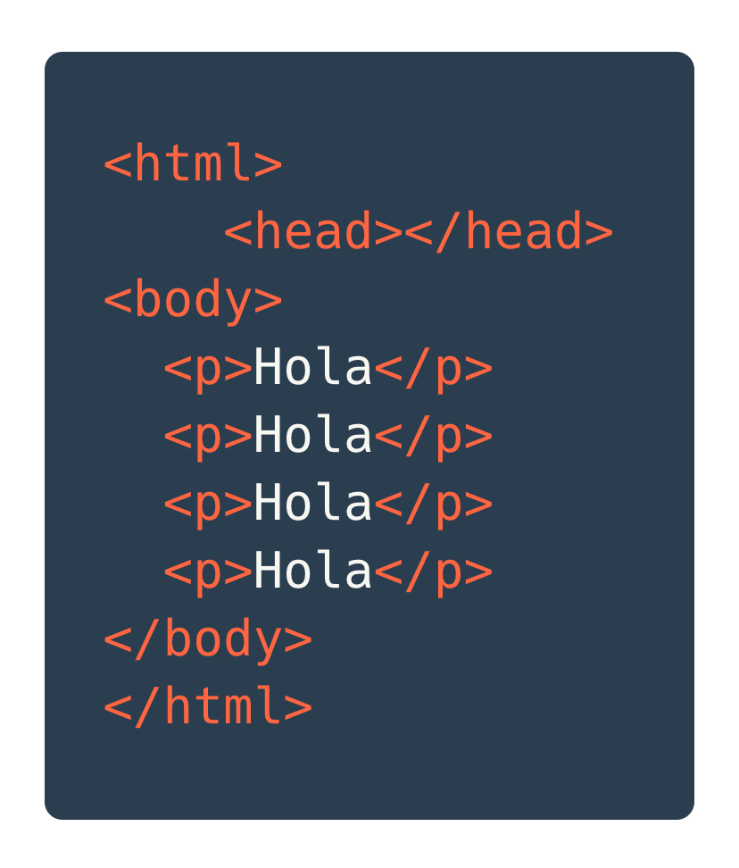
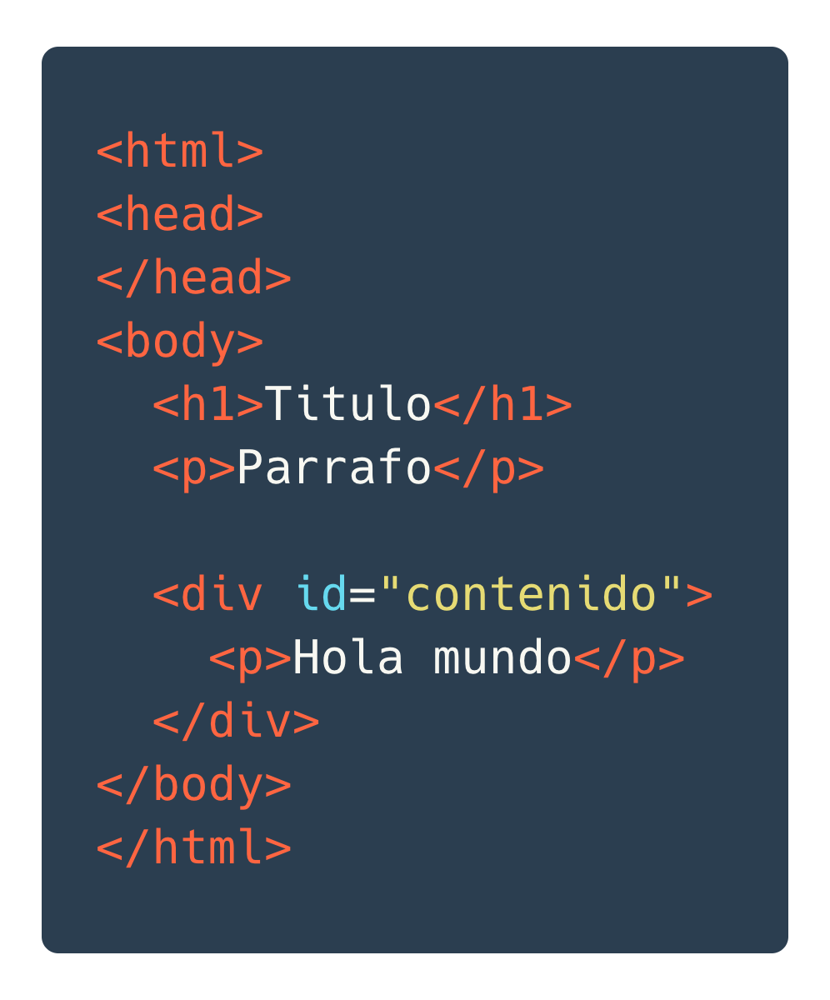

¿Que es el DOM?
Y como accesarlo
Creado por Freddy Montes
Objetivos
- Entender qué es el DOM
- Aprender qué es un objeto
- Aprender a seleccionar elementos en una página
Entendamos el navegador

Todas las páginas web son un documento
¿Que es un documento?
No es mas que la representación escrita, dibujada, presentada del pensamiento
En el contexto de la Web
Es un archivo informático principalmente de texto que incluye su estructura y formato
¿Y el DOM?
Document Object Model
Es una interfaz de programación para los documentos HTML.
DOM
Nos da una representación del documento como un grupo de nodos y objetos estructurados.
Conecta las páginas web con
los lenguajes de programación
DOM y JavaScript
- El DOM no es un lenguaje de programación
- Sin el DOM JavaScript no tendría como acceder y modificar una página Web
El arbol del DOM

EN RESUMEN
El DOM es una representación de la página Web usando objetos
Y que se puede modificar con JavaScript
¿Como accedemos al DOM?
Usando el objeto document
¿Objetos? ¿Que son?
Es un ente que tiene propiedades (caracteristicas) y metodos (comportamientos o acciones).
Audífono
PROPIEDADES
- Color: Negro
- Marca: Sony
- Noise cancelling: Si
Audífono
METODOS
- Encender
- Apagar
- Subir volumen
- Bajar volumen
Todos los elementos del DOM son objetos
Vamos a modificarlos con ellos usando sus propiedades y sus metodos.
Tipos de Objetos del DOM
- Document
- Node
- Element
- NodeList
Document
Representa cualquier pagina web cargada en el browser
Node
Todos los objetos dentro del Document es un nodo de algún tipo.
Element
Un elemento es un tipo específico de nodo
-
<a>: HTMLAnchorElement -
<p>: HTMLParagraphElement
NodeList
Es una colección de nodos
¿Como se trabaja con el DOM?
- Seleccionamos uno o varios elementos (Objetos)
- Modificamos sus propiedades
- Ejecutamos sus metodos
Seleccionando elementos
Métodos clásicos
-
objeto.getElementById(id)
HTMLElement || null -
objeto.getElementsByClassName(name)
HTMLCollection || [] -
objeto.getElementsByName(name)
HTMLCollection || [] -
objeto.getElementsByTagName(tag)HTMLCollection || []
Métodos "modernos"
-
objeto.querySelector(CSS selector)
HTMLElement || null -
objeto.querySelectorAll(CSS selector)
NodeList || []
Siempre usa querySelector y querySelectorAll
Manos a la obra
Tenemos este HTML
Seleccionando elementos
// Usando métodos clásicos
const p = document.getElementsByTagName('p');
console.log(p.length); // 4
const m = document.getElementById('mundo');
console.log(m.innerText) // Hola mundo
// Usando métodos modernos
const parrafos = document.querySelectorAll('p');
console.log(parrafos.length); // 4
const mundo = document.querySelector('#mundo');
console.log(mundo.innerText) // Hola mundo
document el objeto de entrada
Para seleccionar elementos del DOM usamos el objeto de document
Ejemplo
Tenemos este HTML
Seleccionando elementos
// Seleccionamos todos los parrafos del documento
const parrafos = document.getElementsByTagName('p');
console.log(parrafos.length); // 2
const contenido = document.getElementById('contenido');
// Sobre el elemento "contenido" buscamos los elementos
// con el tag p:
const contentParrafos = content.getElementsByTagName('p');
console.log(contentParrafos.length) // 1
En resumén
- El DOM es la representación de la pagina web con objetos
- Los objetos tienes propiedades y metodos
- El objeto
documentes el punto de entrada para acceder al DOM - Con el método
querySelectorseleccionamos un elemento y conquerySelectorAllvarios